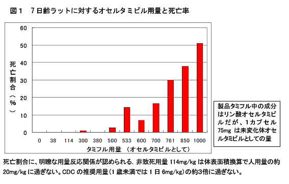

NPO法人医薬ビジランスセンター（薬のチェック）は、27日午後、長妻厚生労働大臣への要望書を提出し、厚生労働省の医薬食品局安全対策課、健康局新型インフルエンザ対策室の担当官らと面談した。薬害タミフル脳症被害者の会も、会の要望書を同時に提出した。
その結果、安全対策課担当官は、2度タミフルが使われ２度とも呼吸障害を起こして死亡した5歳の子については、「因果関係が否定できない」と認めました。
医学的には、2度の使用で同じことが生じた場合は、それだけで因果関係は「確実」と判定します。それが動物実験でも確認されればさらに確実性が増します。しかし、厚生労働省は、因果関係について、これまで「確実」とか「ほぼ確実」「可能性が高い」との判断をほとんどしてきていません。因果関係がかなり高い場合でも「因果関係は否定できない」との表現をこれまでにとってきました。
したがって、今回の「因果関係は否定できない」は、厚生労働省が「タミフルと突然死の因果関係を認めた」ということに等しいと解釈できるでしょう。
この発言に至る経過は、以下のとおりです。
面談は10月27日午後3時半から行なわれました。まず、薬剤による害反応（副作用）症状との因果関係を確定するためには、アレルギー反応を皮内反応テストなど検査で確認する方法のほか、「再使用で症状が再現できた場合」も確実といえるか、との点を確認するために質問しました。
この点に関して「それは言える」と、安全対策課長補佐は発言しました。そのように認識していることを確認したうえで、横浜市の下記の事例を提示しました。
12日発熱（体温不明）。13日近医受診。迅速検査でA型陽性。タミフル投与。夕方から多呼吸となり、顔色が悪くなったため、他の病院を21:00受診。迅速検査で再度A型陽性。タミフル投与。23:00呼吸障害と低酸素血症のため、他の病院に転院。37.6℃。ICU治療、人工呼吸器装着。迅速検査で３回目陽性。14日保健所に報告あり、15日2:50頃死亡。死因は重症肺炎、急性心筋炎とされた。
2009年10月15日新型インフルエンザに感染した患者の死亡について（横浜市）(PDF)より
この子の最初の症状「多呼吸」は、顔色が悪くなったとあることから、チアノーゼの傾向すなわち低酸素血症を起こし、それを代償するために大きく激しく呼吸するようになったため、と解釈できます。低酸素状態は呼吸が抑制されれば起こります。多呼吸（過換気）と呼吸抑制は表裏一体です。
2度目のタミフルを服用して２時間以内に、また呼吸障害と低酸素血症を起こしているので、タミフルが2度使用されて、2度とも呼吸障害を起こし、2回目には、より強い症状となって死亡したということです。
したがって、この子の死亡の原因は確実にタミフルによるといえるのではないかと、安全対策課長補佐に質問をしました。
その返事は、「2度にわたって生じて確実といえるのは、アレルギーの場合で、それ以外の症状の場合は必ずしもいえない」というものでした。
この答えは医学的には適切とは言えません。
アナフィラキシーなどの重いアレルギーでは再使用試験はふつう実施しません。再使用した場合には、さらに重症になり死亡することもあるほど危険だからです。しかし、アレルギーの場合には、プリックテストや皮内テスト（非常に濃度を薄めた液をわずかに皮内に注入する方法）、パッチテスト（薄めた薬剤を皮膚に貼る）、試験管内のテスト（薬剤によるリンパ球刺激試験：DLSTなど）で確認する方法があり、そのテストで陽性となれば、因果関係は「確実」と言えます。
このようにアレルギーの場合には、再使用は多くの場合危険であり、微量のテストや試験管内テストで「確実」と判定ができるのです。
一方、アレルギー以外の害反応（副作用）症状の場合には、再使用以外の方法（皮内テストや試験管内テスト）で確認することができません。したがって、特に重篤でない場合には再度使用して確認するのです。アレルギー以外の場合にこそ、この再使用テストが重要になってきます。
ただし、再使用で重大なことが起きる可能性がある場合には、アレルギーでなくとも、意図した再使用テストは禁忌です。そのように重大はことが起きる可能性があって、意図した再使用テストが不可能な場合にでも、たまたま再使用がなされて同じように症状が出た場合、特に重大な事故に至った場合には、これを教訓にして因果関係を固めるということが大切です。
その意味で、安全対策課長補佐が、「再使用が意味があるのはアレルギー性の場合」としたことは、大変苦しい言い訳であったと考えます。
そこで、「このように２度も同じ症状が出ているのに、タミフルとの因果関係を否定するのですか」と質問したところ、
「（因果関係は）否定はできません」「完全否定はしません」と発言されました。
因果関係が否定できない有害事象は「副作用」ですから、この症例に類似した、呼吸抑制や呼吸不全、低酸素血症、突然死、突然死時の非心原性肺水腫などについて、当然、添付文書に記載し、被害救済がなされなければなりません。
そうでない限り、医師はどう解釈してよいか分からず、いつまでたってもタミフルによる被害と解釈できないままとなるでしょう。
因果関係をより補強するものとして、動物実験は大切です。そこで、このことも、事前に確認しました。
安全対策課長補佐は、「適切に実施された動物実験で再現すれば確実性が高まります」と発言されました。
承認申請概要に記載された動物実験でも、タミフルを1回使用後に突然死が多発していましたので、それだけでも動物実験で再現されているといえます。さらに、2007年4月に因果関係を確認するため、メーカーに対して追加実験が課せられました。それをうけて実施された実験を含めて集計したものが、要望書に提示したタミフルの用量別死亡割合の図です(図１)。
「私は、今年7月にこの職についてばかりで、詳しくは存じ上げないので、この図について、ここで無責任に申し上げることができません」と、返事を避けました。
これが本当だとしてどうか、と質問しましたが、やはり「無責任に申し上げることができません」との返事で、回答は得られませんでした。
タミフルの因果関係検討のためのワーキンググループでは、このデータをもっても「因果関係否定できず」ともしなかったのです。つまり因果関係を「完全否定」し、厚労省もそれを追認したデータがこれです。
ワーキンググループや厚労省の判断の誤りを明瞭に示しているといえるでしょう。
09Aインフルエンザの流行状況と、重症度について、健康局新型インフルエンザ対策室の室長補佐（医師）は、「当初、重症度が高いと考えていたが、誤報も含んでいたと思う。日本での流行状況が判明するにつれて、だんだんとそれほどのリスクはない、季節性と変わりはない、と分かってきた。それとともに、タミフルの予防使用は必要がないため推奨しなくなった。」などの趣旨の発言をしました。
「2005年と比較して、10分の１、2007年と比較して５分の１程度の死亡率である」という点を指摘すると、「その程度であると、個人的には認識している」とのことでした。
この医師は、「現在、『新型は重症で怖い』が主流だが、『そうではない』との考え方もあり、むしろ、その考え方は少なく、厚労省では判断に支障をきたしている。『怖くない、タミフルにも問題あり』との意見が出ることは、歓迎する。」「論文にして頂きたい」との趣旨の発言をされました。
薬害タミフル脳症被害者の会は、もうこれ以上黙っておれない、と、これまでの１と２の要望のほか、３についても今回新たに追加して要望されました。